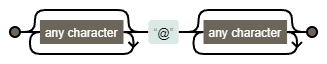
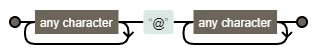
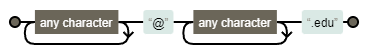
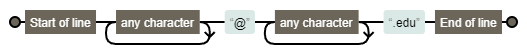
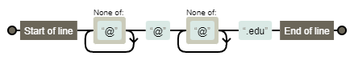
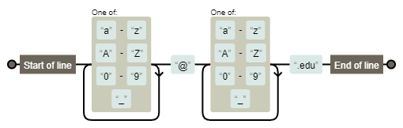
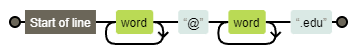
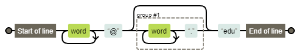
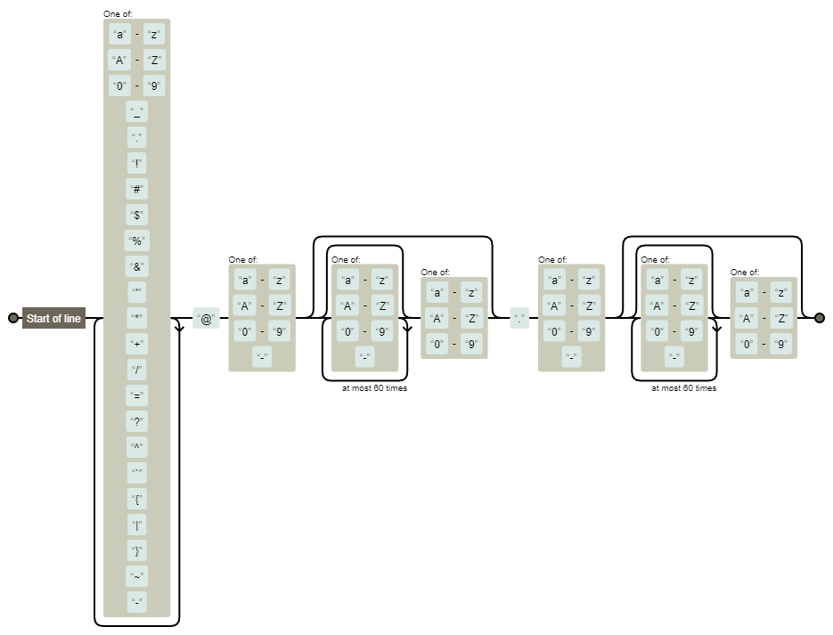
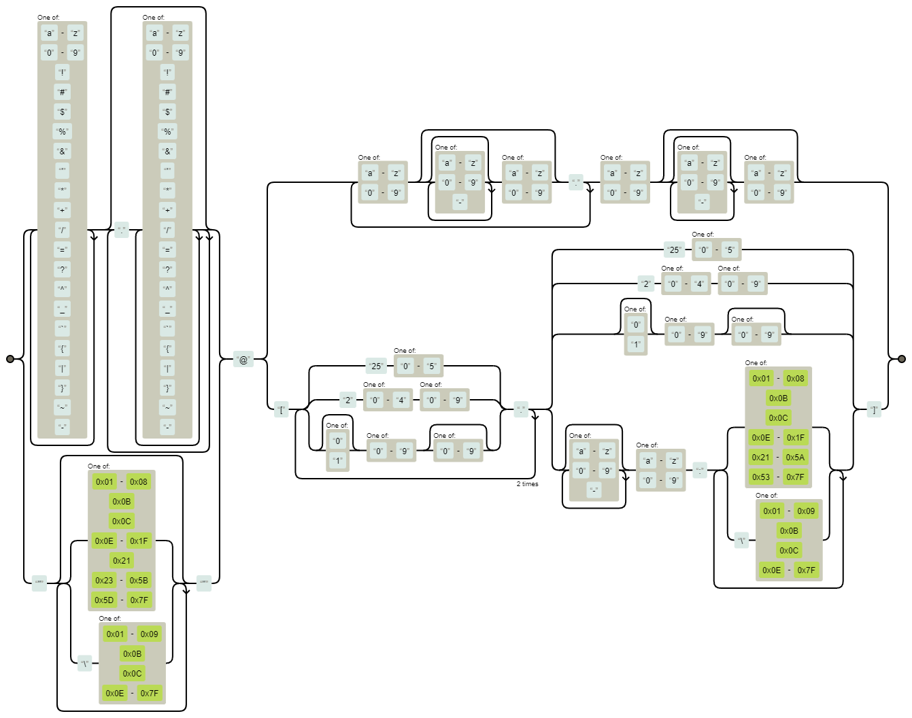

Python: Читання/запис файлів та регулярні вирази
Прикладна аналітика при розробці IT
КНУ імені Тараса Шевченка, ФІТ
Читання та запис файлів
Запис даних
До цього часу більшість програм, які ми писали, просто зберігали всю інформацію в пам’яті, тобто в змінних або всередині самої програми.
Недоліком цього є те, що як тільки програма завершує роботу, все, що ви ввели, все, що ви робили з цією програмою, втрачається.
Використовуючи файли, ви можете зберігати інформацію довгостроково, і введення/виведення файлів (англ. file I/O) в контексті програмування - це написання коду, який може читати з файлів, тобто завантажувати інформацію з них, або записувати до них, тобто зберігати інформацію у самих файлах.
Запис даних
Для початку пропоную розглянути знайому структуру даних, яку ми бачили раніше - list.
Створимо програму names.py, яка буде зберігати імена у списку, а потім виводити їх на екран:
Запис даних
Припустімо, що ми хочемо додати підтримку збереження декількох імен, наприклад трьох. Для цього ми можемо використати список. Для цього необхідно створити пустий список names і додавати (append) до нього імена, які вводить користувач. Вивід імен відсортуємо за алфавітом:
Як Вас звати? Гаррі
Як Вас звати? Рон
Як Вас звати? Герміона
Привіт, Гаррі!
Привіт, Герміона!
Привіт, Рон!Звичайно, якщо я запущу цю програму ще раз, всі імена пропадуть. Було б непогано мати можливість якось зберігати цю інформацію. І саме тут з’являється ввід-вивід файлів, і саме тут з’являються файли.
Запис даних
Давайте перепишемо нашу програму так, щоб вона зберігала імена у файлі names.txt.
Для цього нам необхідно відкрити файл, використовуючи функцію open() - ця функція приймає два аргументи: ім’я файлу і режим відкриття.
Режим відкриття може бути:
r(англ. read) - читання, це режим за замовчуванням.w(англ. write) - запис, цей режим перезаписує файл.a(англ. append) - дописування, цей режим додає дані до файлу.
Якщо файл не існує, то він буде створений. Давайте перепишемо нашу програму з використанням функції open():
Запис даних
Запустимо цю програму і перевіримо, чи вона працює:
Відкриємо створений файл:
Все працює! Тепер давайте виконаємо цю програму ще раз, але цього разу введемо ім’я Рон:
Відкриємо створений файл:
Як бачимо, файл перезаписався, і тепер в ньому знаходиться тільки ім’я Рон.
Запис даних
Якщо ми хочемо додати ім’я до файлу, а не перезаписати його, то використовуйте режим a.
Видаліть файл names.txt і давайте перепишемо нашу програму так, щоб вона дописувала імена до файлу names.txt:
Запустимо цю програму і перевіримо, чи вона працює:
Запис даних
Запустимо програму ще раз і спробуємо додати ім’я Гаррі та Рон:
Зовсім не той результат, який ми очікували.
Імена записалися в один рядок. Це тому, що функція write не додає символ переносу рядка (\n) після запису імені.
Запис даних
Щоб це виправити, ми можемо додати символ переносу рядка після запису імені:
Запустимо цю програму:
Terminal
Примітка
Документація до функції open: https://docs.python.org/3/library/functions.html#open
Контекстний менеджер
Під час написання коду дуже легко забути закрити файли і це може стати проблемою. Тому ми можемо піти більш безпечним шляхом і використовувати контекстний менеджер.
Контекстний менеджер - це спеціальна конструкція мови Python, яка дозволяє виконувати певні дії до входу в блок коду і після виходу з блоку коду.
Для використання контекстного менеджера використовується ключове слово with. Давайте перепишемо нашу програму з використанням контекстного менеджера:
Такий підхід не змінює функціональність програми, але є більш пітоничним.
Читання даних
Для читання, у функції open використовується режим r.
Давайте створимо програму names_read.py, яка буде читати імена з файлу names.txt і виводити їх на екран:
Для читання використаємо метод readlines, яка повертає список рядків, які містяться у файлі.
Цей метод повертає список, тому ми можемо використати цикл for для виведення імен на екран. Також слід врахувати, що метод readlines повертає список, в якому кожен рядок містить символ переносу рядка (\n).
Щоб цього уникнути, ми можемо використати метод rstrip, який видаляє символ переносу рядка з кінця рядка:
Читання даних
Але у попередньому прикладі ми двічі проходимось по всьому файлу: спочатку ми читаємо його у список, а потім виводимо список на екран.
Це не є найкращим рішенням, оскільки ми можемо витратити багато пам’яті, якщо файл дуже великий.
Тому ми можемо використати цикл for безпосередньо для читання файлу:
Читання даних
Тепер трошки ускладнимо задачу.
Припустимо, що ми хочемо виводити привітання у алфавітному порядку. Для цього нам необхідно відсортувати список імен.
Для цього ми можемо використати функцію sorted(), яка повертає відсортований список:
Читання даних
Ми можемо зробити цю програму більш компактною. Для цього ми можемо відсортувати сам файл:
Для зворотного сортування ми можемо використати параметр reverse функції sorted:
Примітка
Документація до функції sorted: https://docs.python.org/3/library/functions.html#sorted
Файли csv
Файли csv (англ. comma-separated values, значення, розділені комами) - це файли, які містять дані у вигляді таблиці, де значення розділені комами.
Давайте створимо файл students.csv:
Запишемо у нього імена і додамо гуртожиток:
Файли csv
Тепер давайте створимо програму students.py, яка буде читати цей файл.
Ми можемо використати метод split для розділення рядка на частини. Давайте перепишемо нашу програму з використанням методу split:
Файли csv
Коли у вас є змінна, яка є списком, наприклад row, вам не обов’язково переносити всі ці змінні у окремий список.
Ви можете розпакувати всю послідовність одразу.
Іншими словами, якщо ви знаєте, що функція типу split повертає список, який містить два елементи, ви можете розпакувати цей список у дві змінні:
Файли csv
Уявімо, що нам треба відсортувати цей список даних.
Для цього я можу використати функцію sorted() і вказати, що я хочу сортувати за другим елементом списку:
Файли csv
З технічної точки зору, це працює, але це не є найкращим рішенням, оскільки дані сортуються по цілому реченню.
Ми можемо вирішити таку задачу за допомогою словників.
Для цього нам необхідно створити пустий словник student_dict і додавати до нього інформацію про студентів:
students_lst = []
with open('students.csv', 'r', encoding="utf8") as file:
for line in file:
name, house = line.rstrip().split(',')
student_dict = {}
student_dict['name'] = name
student_dict['house'] = house
students_lst.append(student_dict)
for student in students_lst:
print(f'{student["name"]} живе в гуртожитку {student["house"]}')Файли csv
Ми можемо скоротити код шляхом присвоєння значень словнику одразу:
students_lst = []
with open('students.csv', 'r', encoding="utf8") as file:
for line in file:
name, house = line.rstrip().split(',')
student_dict = {'name': name, 'house': house}
students_lst.append(student_dict)
for student in students_lst:
print(f'{student["name"]} живе в гуртожитку {student["house"]}')Файли csv
Але результат все ще не відсортований.
Функція sorted приймає параметр key, який вказує, за яким ключем сортувати.
Для цього ми можемо використати функцію get_name, яка повертає ім’я студента і використаємо її як параметр key:
students_lst = []
with open('students.csv', 'r', encoding="utf8") as file:
for line in file:
name, house = line.rstrip().split(',')
student_dict = {'name': name, 'house': house}
students_lst.append(student_dict)
def get_name(student):
return student['name']
for student in sorted(students_lst, key=get_name):
print(f'{student["name"]} живе в гуртожитку {student["house"]}')Файли csv
Якщо ж я захочу відсортувати за гуртожитком у зворотному порядку, то я можу використати функцію get_house і додати параметр reverse=True у функцію sorted:
students_lst = []
with open('students.csv', 'r', encoding="utf8") as file:
for line in file:
name, house = line.rstrip().split(',')
student_dict = {'name': name, 'house': house}
students_lst.append(student_dict)
def get_house(student):
return student['house']
for student in sorted(students_lst, key=get_house, reverse=True):
print(f'{student["name"]} живе в гуртожитку {student["house"]}')Драко живе в гуртожитку Слизерин
Гаррі живе в гуртожитку Гріфіндор
Герміона живе в гуртожитку Гріфіндор
Рон живе в гуртожитку ГріфіндорПопередження
Зверніть увагу, що в якості аргументу key функції sorted ми передаємо функцію get_house, без дужок. Ми хочемо передати функцію, а не викликати її.
Анонімні функції
У попередньому прикладі ми використовували функції get_name і get_house, які одразу використовуємо і більші ніколи до них не повертаємось.
Ми можемо спростити цей код і використати анонімні функції (англ. lambda functions), які дозволяють нам визначити функцію в одному рядку:
students_lst = []
with open('students.csv', 'r', encoding="utf8") as file:
for line in file:
name, house = line.rstrip().split(',')
student_dict = {'name': name, 'house': house}
students_lst.append(student_dict)
for student in sorted(students_lst, key=lambda student: student['name']):
print(f'{student["name"]} живе в гуртожитку {student["house"]}')Пакет csv
Читання csv-файлів
Давайте змінимо файл students.csv і замінимо гуртожитки на будинки де вони виросли:
Тепер давайте виведемо ці дані на екран:
students_lst = []
with open('students.csv', 'r', encoding="utf8") as file:
for line in file:
name, home = line.rstrip().split(',')
student_dict = {'name': name, 'home': home}
students_lst.append(student_dict)
for student in sorted(students_lst, key=lambda student: student['home']):
print(f'{student["name"]} з {student["home"]}')У нас виникла помилка. Це тому, що у нас є рядок, який містить дві коми, а ми спробували розпакувати його у дві змінні. Для вирішення цієї проблеми ми можемо використати в якості роздільника якийсь менш популярний символ, наприклад |:
Пакет csv
Інший варіант - це помістити значення у лапки:
В будь-якому випадку необхідно буде змінювати код і продумувати логіку читання файлу. І це стає дуже незручним і складним, якщо у вас є багато різних файлів, які містять дані у різних форматах. Тому для роботи з csv-файлами використовують спеціальний пакет csv. Давайте перепишемо нашу програму з використанням пакету csv:
import csv
students_lst = []
with open('students.csv', 'r', encoding="utf8") as file:
reader = csv.reader(file)
for row in reader:
student_dict = {'name': row[0], 'home': row[1]}
students_lst.append(student_dict)
for student in sorted(students_lst, key=lambda student: student['home']):
print(f'{student["name"]} з {student["home"]}')Якщо ми чітко знаємо кількість стовпчиків у .csv-файлі, ми можемо розпакувати рядки одразу у змінні:
import csv
students_lst = []
with open('students.csv', encoding="utf8") as file:
reader = csv.reader(file)
for name, home in reader:
students_lst.append({'name': name, 'home': home})
for student in sorted(students_lst, key=lambda student: student['home']):
print(f'{student["name"]} з {student["home"]}')Пакет csv
Часто у табличних файлах перший рядок = за назву змінних. Давайте додамо name та home у students.csv:
В таких випадках ми можемо використати функцію DictReader, яка повертає словник, а не список:
import csv
students_lst = []
with open('students.csv', encoding="utf8") as file:
reader = csv.DictReader(file)
for row in reader:
students_lst.append({'name': row['name'], 'home': row['home']}) # або students_lst.append(row)
for student in sorted(students_lst, key=lambda student: student['home']):
print(f'{student["name"]} з {student["home"]}')Такий підхід є більш стійким до змін у файлі: хтось міг змінити порядок стовпчиків, але програма все одно буде працювати.
Примітка
Документація до пакету csv: https://docs.python.org/3/library/csv.html
Пакет csv
Запис csv-файлів
Припустимо, що ми створюємо програму, яка буде записувати дані про студентів у файл students.csv. Залишимо у файлі students.csv наступні дані:
Давайте перепишемо програму students.py, яка буде записувати дані у файл students.csv:
Запустимо цю програму:
Відкриємо файл students.csv:
Як бачите, Python автоматично взяв рядок з комою у лапки щоб уникнути помилки.
Пакет csv
Запис csv-файлів
Існує ще один спосіб реалізувати програму students.py не турбуючись про порядок змінних у списку. Для цього ми можемо використати функцію DictWriter, яка дозволяє записувати дані у файл у вигляді словника:
Запустимо цю програму:
Відкриємо файл students.csv:
Бінарні файли
Бінарні файли - це файл, який складається лише з нулів та одиниць і дозволяє зберігати будь-які дані: зображення, відео, звук, текст, тощо.
В Python є популярна бібліотека під назвою pillow, яка дозволяє працювати з зображеннями, застосовувати фільтри, як в Instagram, створювати анімації, тощо.
Примітка
Документація до пакету PIL: https://pillow.readthedocs.io
Давайте створимо анімоване GIF-зображення. Сьогодні такі файли зустрічаються скрізь у вигляді мемів, анімацій, наклейок тощо. Анімоване GIF-зображення – це графічний файл, який містить кілька зображень всередині, а комп’ютер показує їх одне за одним, створюючи ефект анімації.
Бінарні файли
Почнемо з двох статичних зображень:


Примітка
Ці коти походять з мови програмування MIT під назвою Scratch.
Посилання на зображення ви можете знайти у репозиторії: https://github.com/Aranaur/py4ds/tree/main/img/python
Бінарні файли
Тепер створимо файл costume.py, який буде об’єднувати ці два зображення у анімацію:
Для цього нам необхідно використати функцію Image.open, яка дозволяє відкрити зображення, а потім використати метод save, який дозволяє зберегти зображення у форматі GIF:
Бінарні файли
Згустимо програму:
Відкриємо файл costume.gif:

Рисунок 2: costume.gif
Регулярні вирази
Регулярні вирази
Регулярні вирази (англ. regular expressions, regexes) - це патерни, які використовуються для знаходження певних комбінацій символів у тексті.
Наприклад, якщо користувач вводить адресу електронної пошти у вашій програмі, на веб-сайті або в додатку на телефоні, в ідеалі ви хочете мати можливість перевірити, що він дійсно ввів адресу електронної пошти, а не щось інше.
Використовуючи регулярні вирази, ми можемо перевірити, чи = введений текст певному формату. Це дуже корисно, оскільки ви можете використовувати регулярні вирази для перевірки введення користувача, або для пошуку певних комбінацій символів у тексті.
Вони дуже потужні, але в той же час достатньо складні. Якщо ви вперше з ними зіткнулися, то вони здаються дуже незрозумілими. Але якщо ви вже з ними працювали, то ви не зможете без них.
Звичайний пошук
Для початку розглянемо декілька задач і спробуємо їх вирішити використовуючи більш простий синтаксис, і подивитися, з якими обмеженнями ми зіткнемося.
Створимо файл validate.py метою якого є перевірка адреси електронної пошти користувача.
Напишемо просту програму, яка буде приймати від користувача адресу електронної пошти і перевіряти, чи вона = певному формату.
Використаємо метод strip() для видалення зайвих пробілів з початку і кінця рядка. Але як перевірити, що введене значення дійсно є валідним для електронної пошти?
Перша ідея, яка з’являється - це перевірити, чи введений текст містить символ @. Якщо так, то ми можемо припустити, що це адреса електронної пошти:
Зрозуміло, що така програма не є ідеальною, оскільки ми можемо ввести тільки один або декілька символів @ і програма буде пропускати такі випадки.
Звичайний пошук
Наступна ідея - це додати додаткову перевірку, що введений текст містить символ “крапки” (.).
Якщо так, то ми можемо припустити, що це адреса електронної пошти. Давайте спробуємо це зробити:
Звичайний пошук
Програма все ще не ідеальна.
Давайте припустимо, що крапка може бути тільки після символа @.
Для цього ми можемо поділити введений рядок на дві частини, використовуючи метод split() і перевірити, що друга частина містить крапку:
Метод endswith()
Тепер давайте звузимо сферу застосування цієї програми і будемо шукати валідні адреси навчальних закладів, які мають домен .edu.
Для цього ми можемо використати метод endswith():
Terminal
Ми можемо продовжувати роботу над цією програмою. В кінцевому підсумку нам доведеться писати багато коду, просто щоб валідувати адресу електронної пошти.
Бібліотека re
В Python є бібліотека для регулярних виразів, яка лаконічно називається re. В ній є багато можливостей для визначення, перевірки і заміни шаблонів.
Примітка
Документація до бібліотеки re доступна за посиланням https://docs.python.org/3/library/re.html.
Почнемо з однієї з найбільш універсальних функцій пошуку:
re.search(pattern, string, flags=0):
pattern- регулярний вираз, який ми шукаємоstring- рядок, в якому ми шукаємоflags- додаткові флаги, які визначають поведінку функції
Ця функція повертає об’єкт, який містить інформацію про знайдений шаблон. Якщо шаблон не знайдено, то функція повертає None.
Бібліотека re
Давайте спробуємо переписати нашу програму використовуючи функцію re.search():
Terminal
Цей варіант програми працює так само, як і наш перший варіант, але вже з використанням пакету re.
Регулярні вирази
Нам треба уточнити потер пошуку: ліворуч від символа @ може бути певний запис, праворуч від символа @ має бути також якийсь запис, який закінчується на .edu. Для цього існує ряд спеціальних символів, які дозволяють визначити певні шаблони:
| Регулярний вираз | Опис | Приклади |
|---|---|---|
. |
Будь-який символ | a.b = “acb”, “a1b”, “a#b” |
* |
0 або більше повторень попереднього символу | ab*c = “ac”, “abc”, “abbc” |
+ |
1 або більше повторень попереднього символу | ab+c = “abc”, “abbc”, але не “ac” |
? |
0 або 1 повторення попереднього символу | colou?r = “color” і “colour” |
{n} |
Рівно n повторень попереднього символу |
a{3}b = “aaab” |
{n, m} |
Від n до m повторень попереднього символу |
a{2,4}b = “aab”, “aaab” і “aaaab” |
{n,} |
Від n повторень попереднього символу |
a{2,}b = “aab”, “aaab”, “aaaab” і так далі |
^ |
Початок рядка | ^start =, якщо рядок починається з “start” |
$ |
Кінець рядка | end$ =, якщо рядок закінчується на “end” |
[] |
Набір символів | [aeiou] = будь-якому голосному символу |
[^] |
Набір символів, які не повинні зустрічатися | [^0-9] = будь-якому символу, крім цифр |
A|B |
Або | cat|dog = “cat” або “dog” |
(...) |
Група символів | (ab)+ = “ab”, “abab”, “ababab” і так далі |
?:... |
Не захоплювати групу | (?:ab)+ = “ab”, “abab”, “ababab” і так далі |
Регулярні вирази
Давайте спробуємо переписати нашу програму використовуючи функцію re.search() і регулярний вираз:
Комп’ютер використовує свого роду машину, реалізовану в програмному забезпеченні, відомому як скінченний автомат (англ. finite state machine) або недетермінований скінченний автомат.
Візуально це можна зобразити так:

.*@.*Регулярні вирази
Ми можемо переписати нашу програму з використанням регулярного виразу .+, який означає “один або більше будь-яких символів”:
В такому випадку візуалізація недетермінованого скінченного автомату буде наступна:

.+@.+Регулярні вирази
Підемо далі і додамо перевірку, що домен закінчується на .edu:
Terminal
Попередження
Зверніть увагу, що ми використовуємо символ \ для екранування крапки, оскільки в іншому випадку крапка буде сприйматися як будь-який символ.
Крім того, слід враховувати, що комбінація символів \n вважається спеціальним символом, який позначає перехід на новий рядок. Тому ми вказуємо Python читати рядок як “сирий” (англ. raw), використовуючи префікс r перед рядком.
Візуалізація:

.+@.+\.eduПочаток та кінець рядка
Наша програма все ще має ряд недоліків. Наприклад, вона не враховує пробіли, які можуть зустрічатися у введеному тексті:
Terminal
Для таких випадків у світі регулярних виразів існують спеціальні символи початку ^ та кінця рядка $:
Terminal
Візуалізація:

^.+@.+\.edu$Пошук та вилучення
Є ще один значний недолік нашої програми. Вона не враховує умову одного символу @ у адресі електронної пошти:
Для цього ми можемо використати символи [] для визначення набору символів, які можуть зустрічатися у тексті та [^] для символів, які не повинні зустрічатися у тексті. Оскільки ми не хочемо щоб символ @ зустрічався більше одного разу, то ми можемо використати наступний регулярний вираз [^@]:
Візуалізація:

^[^@]+@[^@]+\.edu$Слова та цифри
У світі стандартів існує багато різних специфікацій для адрес електронної пошти. Наприклад, вони повинні починатися з літери. Нам не потрібно перераховувати всі можливі літери алфавіту у нижньому та верхньому регістрі. Замість цього ми можемо використати спеціальний символ [a-zA-Z], який означає будь-яку літеру англійського алфавіту незалежно від регістру. Якщо ж я хочу також врахувати цифри та символ _, то я можу використати спеціальний символ [a-zA-Z0-9_]. Давайте спробуємо використати цей регулярний вираз:
Візуалізація:

^[a-zA-Z0-9_]+@[a-zA-Z0-9_]+\.edu$Слова та цифри
Такі патерни досить часто зустрічаються, тому у регулярних виразах є готові спеціальні символи, які дозволяють замінити їх.
Наприклад, спеціальний метасимвол \w означає будь-яку літеру англійського алфавіту незалежно від регістру, цифру або символ _.
Також є спеціальний метасимвол \d, який означає будь-яку цифру.
Візуалізація:

^\w+@\w+\.edu$Слова та цифри
Повний перелік спеціальних метасимволів:
| Метасимвол | Опис |
|---|---|
\w |
Будь-яка літера англійського алфавіту незалежно від регістру, цифра або символ _ |
\d |
Будь-яка цифра |
\s |
Будь-який пробіл |
\W |
Будь-який символ, крім літер англійського алфавіту незалежно від регістру, цифр та символу _ |
\D |
Будь-який символ, крім цифри |
\S |
Будь-який символ, крім пробілу |
Флаги
Давайте припустимо, що при введені адреси електронної пошти користувач випадково натиснув клавішу Caps Lock і ввів адресу з використанням великих літер.
Якщо ми використаємо наш регулярний вираз, то програма не буде вважати таку адресу валідною:
Вирішити таку задачу можна декількома шляхами.
Наприклад, ми можемо використати функцію lower() для перетворення всіх символів у нижній регістр. Це можна зробити на початку програми або використовуючи метод lower() для об’єкта email:
Флаги
Але є інший спосіб. Ми можемо використати аргумент flag для функції re.search(), який може приймати наступні значення:
re.IGNORECASEабоre.I- ігнорувати регістр символівre.MULTILINEабоre.M- використовувати багаторядковий режимre.DOTALLабоre.S- використовувати режим, в якому крапка.відповідає будь-якому символу, включаючи символ нового рядка\n
Тож для нашої задачі код буде виглядати наступним чином:
Опціональність
Припустимо, що адреса користувача містить піддомен gryff.hogwarts.edu. В такому випадку нам слід врахувати варіативність піддоменів. Для цього ми можемо використати спеціальний символ ?, який означає 0 або 1 повторення попереднього символу. Давайте спробуємо використати цей символ:
Terminal
Візуалізація:

^\w+@(\w+\.)?edu$Запис (\w+\.)? означає, що група записів \w+\. може зустрічатися 0 або 1 раз. Таким чином, ми можемо врахувати варіативність піддоменів.
Приклади з реального світу
Все що ми зробили до цього часу для відстеження адрес електронної пошти, все ще має ряд недоліків. Я наведу приклад регулярного виразу, який використовується в реальному світі для відстеження адрес електронної пошти:
^[a-zA-Z0-9_.!#$%&'*+\/=?^_`{|}~-]+@[a-zA-Z0-9-](?:[a-zA-Z0-9-]{0,61}[a-zA-Z0-9])?(?:\.[a-zA-Z0-9-](?:[a-zA-Z0-9-]{0,61}[a-zA-Z0-9])?)Візуально такий регулярний вираз виглядає так:
Приклад валідації email
Приклади з реального світу
В інтернеті є ряд стандартів, які визначають, якими мають бути адреси електронної пошти. Один з них - це RFC 5322. Згідно цього стандарту 99.99% адрес електронної пошти можна відстежити за допомогою наступного регулярного виразу:
(?:[a-z0-9!#$%&'*+/=?^_`{|}~-]+(?:\.[a-z0-9!#$%&'*+/=?^_`{|}~-]+)*|"(?:[\x01-\x08\x0b\x0c\x0e-\x1f\x21\x23-\x5b\x5d-\x7f]|\\[\x01-\x09\x0b\x0c\x0e-\x7f])*")@(?:(?:[a-z0-9](?:[a-z0-9-]*[a-z0-9])?\.)+[a-z0-9](?:[a-z0-9-]*[a-z0-9])?|\[(?:(?:(2(5[0-5]|[0-4][0-9])|1[0-9][0-9]|[1-9]?[0-9]))\.){3}(?:(2(5[0-5]|[0-4][0-9])|1[0-9][0-9]|[1-9]?[0-9])|[a-z0-9-]*[a-z0-9]:(?:[\x01-\x08\x0b\x0c\x0e-\x1f\x21-\x5a\x53-\x7f]|\\[\x01-\x09\x0b\x0c\x0e-\x7f])+)\])Візуально такий запис виглядає наступним чином:
Валідація email за RFC 5322
Очищення тексту
Замість того, щоб просто перевіряти вхідні дані користувача і переконуватися, що вони виглядають так, як ми хочемо, давайте просто припустимо, що користувачі не збираються вводити дані саме так, як ми хочемо. Тому нам доведеться очистити їхні дані.
Створимо програму format.py, яка очищуватиме введене ім’я користувача:
Деякі користувачі можуть мати звичку вводити спочатку своє ім’я, а потім прізвище через кому: Гаррі, Поттер замість Поттер, Гаррі. Це нормально, тому що обидва варіанти однаково добре читаються людиною. Але для комп’ютера це різні рядки. Тому нам потрібно буде очистити введені дані користувача. Створимо змінну name, яка буде містити введені дані користувача:
Подивимось, як працює програма з різними введеними даними:
Очищення тексту
Перший варіант нас може задовільнити, а от другий виглядає зовсім не так, як ми очікуємо. Давайте спробуємо виправити цю ситуацію через умовний оператор if:
Ми виправили ситуацію, але що якщо користувач введе ім’я без використання пробілів? Наприклад, Поттер,Гаррі?
Це призведе до помилки, оскільки ми використовуємо метод split() для розділення рядка на дві частини.
Для цього нам знадобиться функція re.search(), яка повертає об’єкт Match. Якщо відповідність знайдена, то ми можемо використати метод groups() для отримання відповідного значення, які були записані у дужки.
Очищення тексту
Давайте спробуємо використати регулярний вираз ^(.+), (.+)$, який означає “початок рядка, один або більше будь-яких символів, кома, пробіл, один або більше будь-яких символів, кінець рядка”:
Якщо ми введемо ім’я користувача без коми, то з умовним оператором if нічого не буде відбуватися, оскільки matches буде None і програма одразу перейде до виведення привітання:
У випадку, коли користувач введе ім’я з комою, то відбудеться відповідність регулярному виразу і ми зможемо використати метод groups() для отримання відповідних значень:
Очищення тексту
Якщо ж потрібно повернути конкретні групи замість всіх, то можна використати метод group(), який приймає номер групи:
Ця програма має значний недолік - ми очікуємо, що ім’я та прізвище користувача будуть розділені одним пробілом. Якщо користувач введе ім’я без пробілу або навпаки використає декілька, то програма виведе не те, що ми очікуємо:
Очищення тексту
Перший варіант, як врахувати таку ситуацію - це додати * до регулярного виразу:^(.+), *(.+)?$.
Це буде означати “початок рядка, один або більше будь-яких символів, кома, нуль або більше пробілів, один або більше будь-яких символів, кінець рядка”:
Terminal
Попередження
Залежно від того, наскільки безладними є дані, ваші регулярні вирази можуть ставати все складнішими і складнішими. Кількість умов напряму впливає на їх складність.
Моржевий оператор
Ми можемо скоротити наш код, використовуючи “моржевий оператор” := (англ. walrus operator), який дозволяє присвоювати значення змінній та одночасно використовувати її у виразі:
Отримання даних з рядка
Розглянемо варіант програми, де нам потрібно отримати дані з рядка, щоб відповісти на якесь питання. Наприклад, давайте створимо програму twitter.py, яка буде запитувати у користувачів URL-адресу їхнього профілю в Twitter і витягти з неї ім’я користувача:
Розглянемо рядок https://twitter.com/harrypotter. Перше на що звертаємо увагу - це те, адреса сервісу завжди починається з https://twitter.com/. Тому ми можемо замінити цю частину рядка на порожній рядок. Для цього ми можемо використати метод replace():
Отримання даних з рядка
Але така проста програма не враховує низку ситуацій:
- адреса може починатися без
https:// - адреса може починатися з
http:// - адреса може містити
www. - тощо
Використаємо бібліотеку функцію:
re.sub(pattern, repl, string, count=0, flags=0),
яка замінює всі входження патерну pattern на repl у рядку string.
Використаємо регулярний вираз ^(https?://)?(www\.)?twitter\.com/, який читається як: “початок рядка, група символів https:// або http:// 0 або 1 раз, група символів www. 0 або 1 раз, twitter.com/”:
Отримання даних з рядка
Проте, якщо користувач введе замість URL-адреси Twitter адресу іншого сервісу, регулярний вираз працювати не буде:
Отримання даних з рядка
В такому випадку ми можемо повернутися до re.search() та використати групи для отримання імені користувача, але для виключення певної групи з переліку можна використати ?::
import re
url = 'https://facebook.com/harrypotter'
if matches := re.search(r'^https?://(?:www\.)?twitter\.com/(.+)$', url, re.IGNORECASE):
username = matches.group(1)
print(f"Ім'я користувача: {username}")
else:
print('Невідомий сервіс')Невідомий сервісТепер програма буде працювати з будь-якими URL-адресами:
Отримання даних з рядка
Якщо ж ознайомитися з документацією Twitter, то можна знайти, що ім’я користувача може містити тільки літери, цифри, символ _, тобто не просто .+, що може бути чим завгодно. Тому ми можемо використати регулярний вираз [a-z0-9_]+ для більш точного пошуку імені користувача, який читається як: “будь-яка літера англійського алфавіту, цифра або символ _ 1 або більше разів”:
import re
url = 'https://www.twitter.com/harrypotter'
if matches := re.search(r'^https?://(?:www\.)?twitter\.com/([a-z0-9_]+)$', url, re.IGNORECASE):
username = matches.group(1)
print(f"Ім'я користувача: {username}")
else:
print('Невідомий сервіс')Ім'я користувача: harrypotterВ пакеті re є ряд цікавих функцій:
re.split(pattern, string, maxsplit=0, flags=0)- розбиває рядок на частини за допомогою регулярного виразуre.findall(pattern, string, flags=0)- повертає список всіх знайдених входжень регулярного виразу
Порада
Для побудови, тестування та налагодження регулярних виразів можна використовувати regex101.com.
Дякую за увагу!